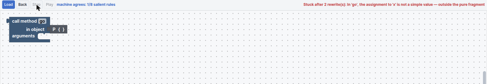

What does a variable hold?
This is the chapter B-MJ exists for. The question sounds settled — a variable holds a reference — but you only really believe it when you have watched the alternative run beside it and produce a different answer.
The Semantics dock
Open the bottom tools with Ctrl + J, or the ◯ button in the workspace title bar, and choose Semantics. Five tabs:
| Tab | Shows |
|---|---|
| Call-by-Structure | Evaluation of a chosen method call, structure first |
| Call-by-Value | The same, arguments reduced first |
| CESK | The heap machine: Control, Stack+Environment, Store, Kontinuation |
| A vs B | One program, two value models, stepped together |
| Rewrite | Substitution semantics on the pure fragment |
The first two tabs mirror B-Lambda's, and like those they need you to choose a redex — here a method call — before they have anything to show: “Choose a method call to inspect its evaluation.” The last three have their own Load button and run the whole program.
Two value models
Everything in this chapter turns on one distinction:
| Model A — heap references | Model B — structures | |
|---|---|---|
| An object is | A box on the heap | An inline structural value |
| A variable holds | A reference to that box | The structure itself |
y = x |
Both names now point at one box | y gets its own copy |
| Field update | Mutates the shared box | Functional — produces a new structure |
| Aliasing | Real, and observable | Does not exist |
Model A is Java. Model B is the intuition many people actually carry around — that assigning an object copies it — made precise enough to execute. The two agree on almost every program. They diverge exactly when a program observes a value through two names, and that is the whole lesson.
The CESK machine
A pure CESK-style machine over Model A, organised around an explicit activation-frame stack. Its S is store — the heap — and it is there because MiniJava has objects and the λ-calculus does not. B-Lambda's CSEK machine also carries a fourth letter, but a different one: there S is structure, and there is no heap at all.
The panel shows one column per machine component, in machine order:

◻ in the kontinuation marks the hole the in-flight
value will fill.| Column | Holds |
|---|---|
| C Control | What the machine evaluates next — a statement, an expression, or a computed value — plus the rule that just fired |
| S·E Stack + Environment | The call stack of activation frames with their locals. The top frame is the one running. |
| S Store | The heap. Only references draw arrows, and arrow colour matches the reference badge. |
| K Kontinuation | Pending work, innermost first. Each call frame keeps its own kontinuation stack. |
| Output | Anything printed so far |
The arrows are the point of the panel. When a field is written, the box glows, the arrows into it pulse, and the value animates along its path — so a write through an alias is something you see arrive somewhere you were not looking. Control, frame, heap-box and kontinuation entries all link back to the block that created or awaits them, and the focus block is highlighted in the workspace.
step is pure — it returns a new state rather than mutating the old one —
so Back restores the exact previous state instead of replaying from the start.
The same guarantee as in B-Lambda's machines.
Garbage collection
The CESK tab has two controls the other tabs do not: Run GC, and an Auto GC over n objects checkbox with an editable threshold (50 by default).
This makes reachability concrete. Because the store is on screen and the roots — the frames in the stack column — are on screen next to it, you can look at a heap box, trace the arrows, and predict whether collection will keep it. Then press Run GC and find out.
The Dynamic Array (Resizing) example is the one to use here: resizing allocates a new backing array and abandons the old one, so there is genuine garbage to collect at a predictable moment.
A vs B
The tab that answers the chapter's question. It runs the same program under both value models and steps them together — one press advances both machines by exactly one transition.
Load the Aliasing Contrast (A vs B) example and press Play. Part-way through, the two columns already disagree about what the variables hold:

What happened. The program creates a Cell, aliases it with y = x, updates
the field through y, then prints what both names see:
| At the end | Model A | Model B |
|---|---|---|
x |
#2 |
Cell{f: 0} |
y |
#2 — the same box |
Cell{f: 41} — a different structure |
| Heap | #1 · P, #2 · Cell with
f = 41 |
— there isn't one |
| Output | 4141 | 41 |
Under Model A the update through y is visible through x, because they are
the same object — so both halves of the printed number are 41. Under Model B the assignment
copied, so x still holds its original 0.
Both machines finish in 51 steps, and that is not a coincidence — they share their control flow, so their step counts are equal by construction. That is what makes the comparison clean: nothing differs except what the values are, so the different output can only be caused by the value model. They diverge only when the program observes a value the models disagree about.
Rewrite
Substitution semantics on MiniJava's pure fragment, under Model B. Each state is a literal block tree; each step rewrites the highlighted redex; a method call substitutes its arguments as independent copies.
A live correspondence line replays the same program on the Model B machine and checks that every salient rewrite rule matches the machine's trace — the operational-correspondence claim, executed. It reports progress as machine agrees: n/m salient rules.
The fragment really is pure, and the tab is honest about where that ends:

That is the correct outcome, not a failure. Aliasing Contrast is a program about
mutation, and a substitution semantics has nothing to say about mutation. Notice that
new object P did rewrite, to the structural value P { }, before the
stepper reached the assignment it could not handle.
For this tab, load Independent Copies (Rewrite) instead — a program inside the pure fragment, where you can watch arguments being substituted as genuinely independent copies and the correspondence line stay green all the way to the end.
Why counters differ
Two tabs report step counts, and they behave differently. It is worth knowing which is which.
| Comparison | Granularity | Counters |
|---|---|---|
| A vs B machine vs machine |
The same. Each press advances both machines by one transition. | Equal, by construction — 51 and 51 on Aliasing Contrast. |
| Rewrite rewriter vs machine |
Coarse vs fine. The rewriter counts only salient reductions; the machine counts
every transition — call, block entry, if / while
dispatch, assignment, field read and write, and the bookkeeping between them. |
Not equal. One rewrite is several machine steps, so the machine's number is larger. |
The rule of thumb across the whole workshop: two counters over the same machine granularity advance together, whereas a substitution counter measured against a machine is always coarser — because the machine also counts the administrative transitions the rewriter never names. The same asymmetry appears in B-Lambda's Lockstep view and in MnL's.